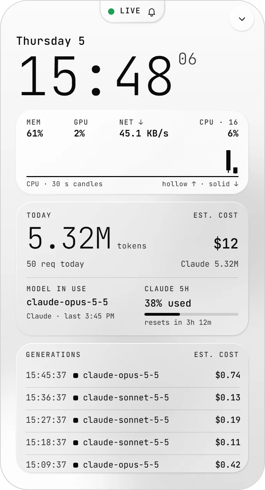
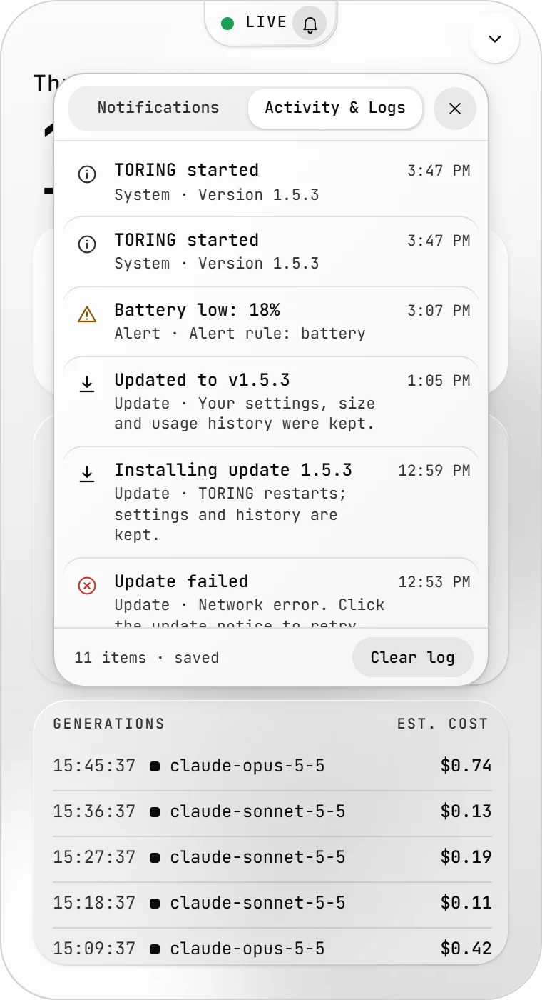
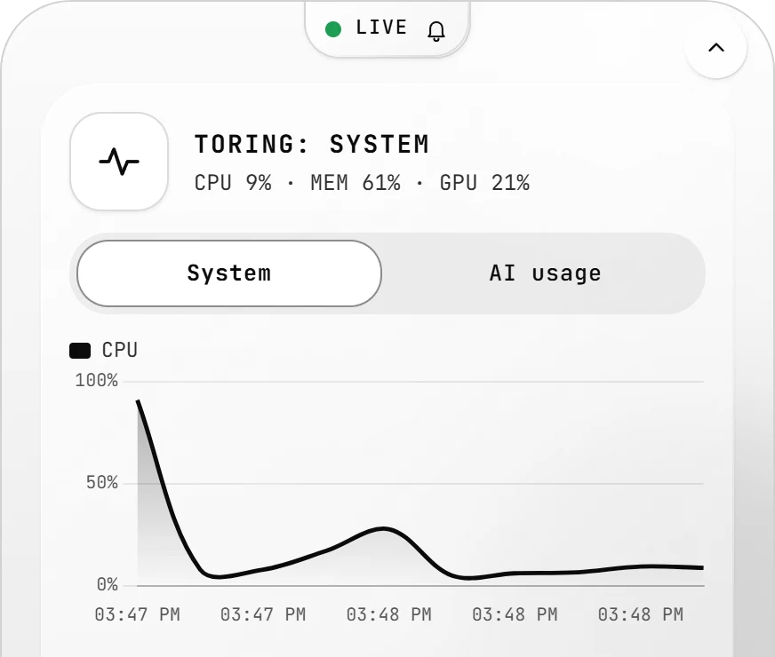
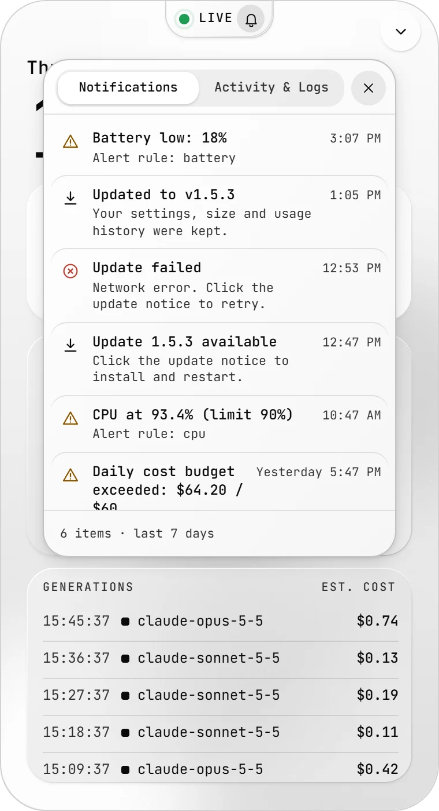
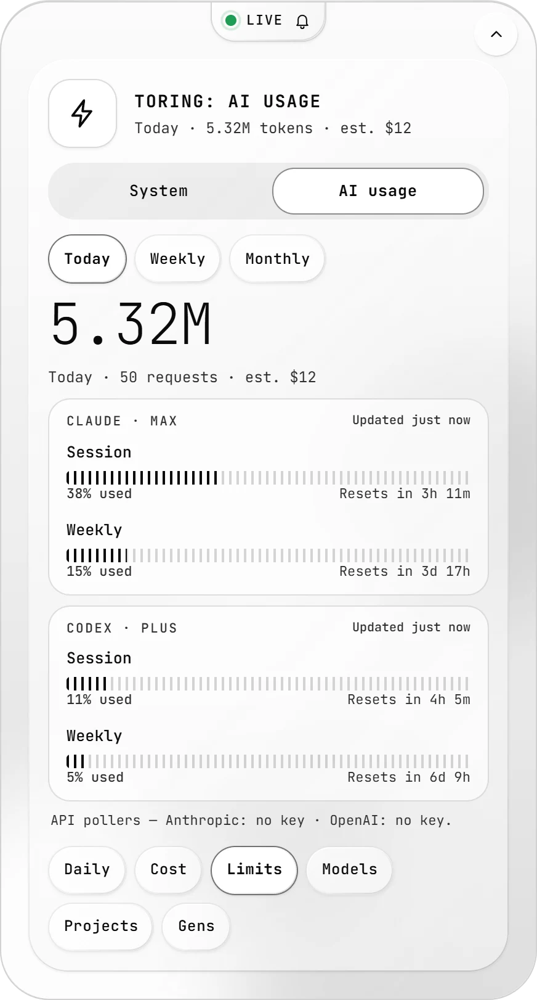

TORING: see your PC, see your tokens
A light glass monitor for Windows. Your PC stats and your AI usage, live in one always-on-top widget.
Download for WindowsSee your PC.See your tokens.
Claude Code and Codex write every request to local logs. TORING reads them, prices each generation (estimated) and adds it up: today, weekly, monthly.
Every token,counted locally.
Logs are read from disk into a local database. The only outgoing requests are the plan-limit check, using the Claude and Codex sign-ins already on your PC, the update check, and a small connectivity check to those same hosts. No account. No upload.
Your usage stayson this PC.
Live PC stats
CPU, memory, GPU, disk and network, live. Thirty-second CPU candles.
Temperatures and battery wherever your hardware reports them.
CPU hot, memory full, budget crossed, update ready? One bell, one history, kept across restarts. Notice types have their own icons.
A quiet bellfor loud moments.
Session and weekly limits for Claude and Codex, as % used with a reset countdown. Read through the sign-in already on your PC.
Know what's left,before it's gone.
Keep itin sight,always.
Always on top, tucked in the tray, updating itself. One installer, nothing to set up.
Download for WindowsInstaller is not code-signed yet: Windows SmartScreen may ask you to confirm (More info → Run anyway).





What TORING does
TORING is a light glass desktop widget for Windows 10 and 11. It shows live CPU, memory, GPU, disk and network stats, your Claude Code and Codex token usage with estimated cost for today, the week and the month, your Claude and Codex plan limits as percent used with reset countdowns, and a notification centre with alerts and update notices whose history is kept across restarts.
Usage logs are read locally into a local database. The only outgoing requests are the plan-limit check, which uses the Claude and Codex sign-ins already on your PC, the update check, and a small connectivity check to those same hosts. There is no account and no upload.
The installer is free to download from the GitHub release. It is not code-signed yet, so Windows SmartScreen may ask you to confirm.